Addressing Scientific Illusions in Image Synthesis
We introduce the PISA (Physics-Informed Simulation and Alignment) framework for studying physics post-training.
PisaBench: We introduce PisaBench to examine the ability of video generative models to produce accurate physical phenomena by focusing on a straightforward dropping task.
Physics Post-Training: We present a two-stage post-training pipeline to enhance the physical accuracy of video diffusion models.
Generalization Analysis: We conduct a series of experiments to examine the our model's learned behavior and generalization ability.
Fig 1: When presented with knowledge-implicit prompts, can LMMs and VLMs effectively distinguish between real and fake scientific images? Can generative models produce scientifically plausible images from such prompts? Does fine-tuning generative models with relevant data enhance their ability to generalize based on knowledge? To explore these questions, we establish a benchmark for evaluating LMMs and VLMs, construct a dataset to train a reward model which can then serve as a reliable tool for assessing generative models, and fine-tune generative models to investigate the generalization.
We present a novel approach to integrating scientific knowledge into generative models, enhancing their realism and consistency in image synthesis. First, we introduce Science-T2I, an expert-annotated adversarial dataset comprising adversarial 20k image pairs with 9k prompts, covering wide distinct scientific knowledge categories. Leveraging Science-T2I, We present SciScore, an end-to-end reward model that refines the assessment of generated images based on scientific knowledge, which is achieved by augmenting both the scientific comprehension and visual capabilities of pre-trained CLIP model. Additionally, based on Science-T2I, we propose a two-stage training framework, comprising a supervised fine-tuning phase and a masked online fine-tuning phase, to incorporate scientific knowledge into existing generative models. Through comprehensive experiments, we demonstrate the effectiveness of our framework in establishing new standards for evaluating the scientific realism of generated content. Specifically, SciScore attains performance comparable to human-level, demonstrating a 5% improvement similar to evaluations conducted by experienced human evaluators. Furthermore, by applying our proposed fine-tuning method to FLUX, we achieve a performance enhancement exceeding 50% based on SciScore.
Science-T2I: An Adversarial Dataset Spanning Scientific Disciplines
Task overview. Science-T2I consists of 16 tasks spanning physics, chemistry and biology that require the model to infer or visualize concepts not explicitly stated in the prompts but rooted in underlying scientific principles.
Fig 2: Data statistics (left) of and wordcloud (right) of Science-T2I.
Task classification. Beyond a classification based on scientific disciplines, the tasks can be categorized into two distinct groups:
1. Subject-oriented task (ST) require scientific reasoning to discern how inherent differences between subjects lead to varying visual features under identical conditions.
2. Condition-oriented task (CT) focus on how a single condition affects various subjects. Scientific reasoning in these tasks centers on the applied condition, not the subject's individual properties.
Fig 3: Task classification of Science-T2I.
Prompt design. In Science-T2I, we categorize prompts into three types based on their use in scientific reasoning:
1. Implicit prompt (IP) refers to prompts that imply visual characteristics or phenomena requiring scientific interpretation. For example, "an unripe apple" suggests the apple's color is green, but this is not explicitly stated.
2. Explicit prompt (EP) reformulates the IP into a clear, descriptive statement that results in a scientifically accurate depiction. For instance, "a green apple" explicitly conveys the apple's immaturity.
3. Superficial prompt (SP) provides explicit but scientifically inaccurate descriptions, focusing on surface-level interpretations. For example, interpreting "an unripe apple" as "a red apple" is a superficial interpretation that lacks scientific accuracy.
Fig 4: Data curation pipeline of Science-T2I.
Data curation. We utilize GPT-4o to create templates and generate corresponding prompts during the data curation process. These outputs are then used to guide T2I models for image generation. Following this, human annotators review and filter the data, incorporating insights from an additional website knowledgebase to ensure the reliability and accuracy of the final dataset.
Science-T2I Examples
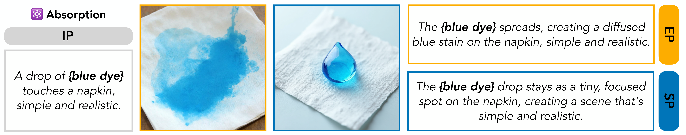
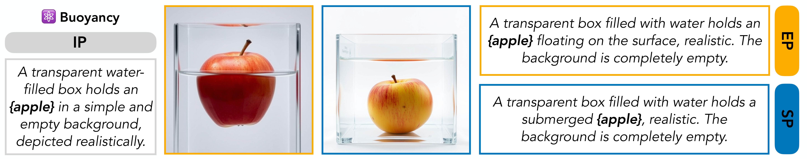
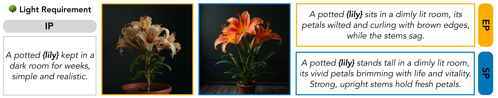
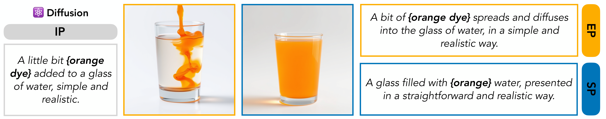
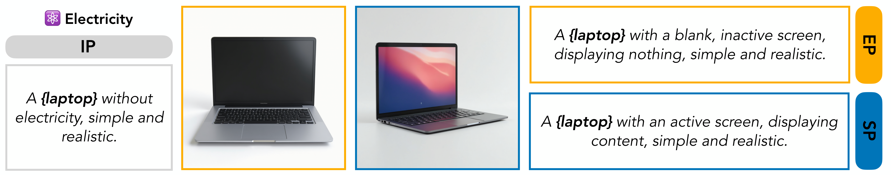
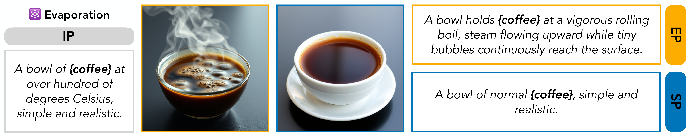
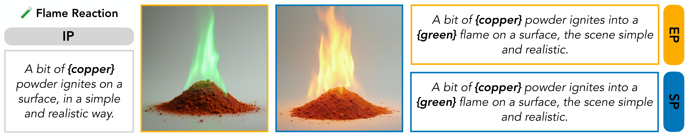
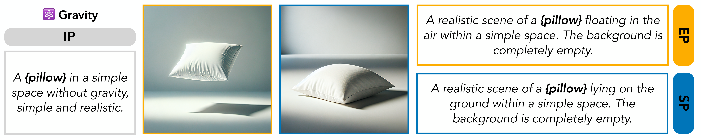
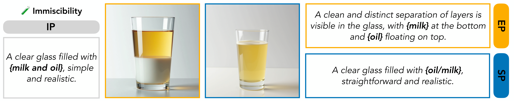
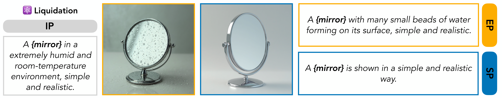
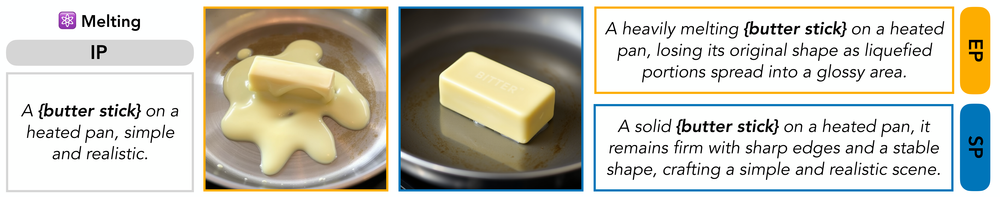
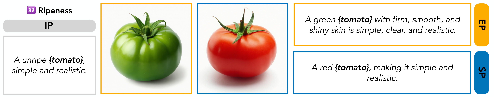
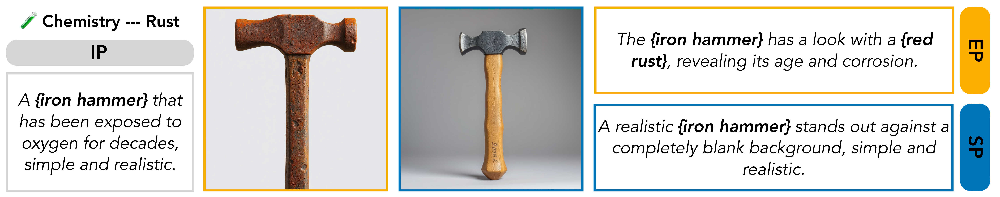
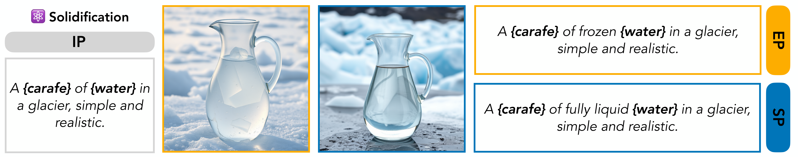
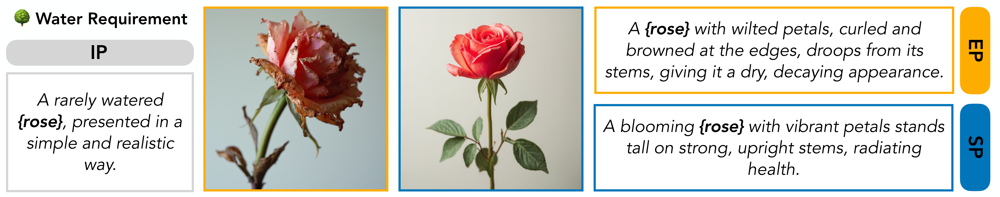
Science-T2I-S&C: An Adversarial Dataset Spanning Scientific Disciplines
Science-T2I-S&C Leaderboard
🤩 Submit your LMM/VLM scores now and watch the leaderboard refresh with your achievements! Email us at .
SciScore: Evaluating Scientific Authenticity of Images
Leveraging Science-T2I, we present SciScore, an end-to-end reward model that refines the assessment of generated images based on scientific knowledge, which is achieved by augmenting both the scientific comprehension and visual capabilities of pre-trained CLIP model. The qualitative performance of SciScore is demonstrated in Fig. 1.
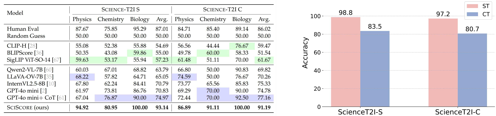
Tab 1: (Left) Performance comparison of different models on Science-T2I-S&C across different subjects. (Right) Performance of SciScore in ST and CT.
Generalization of SciScore to complex scenes. SciScore generalizes well to complex scenes Science-T2I-C beyond simple ones Science-T2I-S, showing it can focus on relevant regions and ignore distractions.
Generalization of SciScore across ST and CT. A significant performance gap emerged between ST and CT, with most failures in ST. This is expected, as CT relies on generalizable visual features, while ST depends on subject-specific details. Lacking exposure to novel subjects, SciScore struggles to identify accurate visual contents.
Benchmarking T2I Generation with SciScore
Three-dimensional evaluation. We evaluated T2I models' scientific reasoning by assessing the alignment between images generated from implicit prompts and those from (1) explicit prompts, (2) superficial prompts, and (3) implicit prompts themselves.
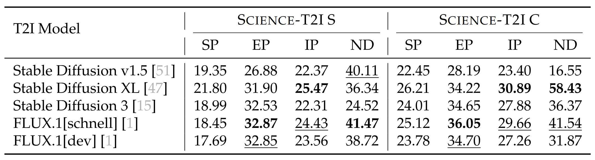
Tab 2: Performance of T2I Models on SciScore.
Analysis on reasoning capability. We introduce the 'Normalized Difference' (ND) metric to assess T2I models' ability to interpret implicit prompts by comparing generated images to those from explicit prompts. Low ND scores (average ~35, mostly < 50) indicate a significant failure of current models to move beyond literal prompt interpretations, especially for implicit scientific concepts.
Two-stage Fine-tuning Framework
We propose a two-stage training framework, comprising a supervised fine-tuning phase and a masked online fine-tuning phase, to incorporate scientific knowledge into existing generative models utilizing Science-T2I.
We propose a two-stage training framework, comprising a supervised fine-tuning phase and a masked online fine-tuning phase, to incorporate scientific knowledge into existing generative models utilizing Science-T2I.
Supervised fine-tuning. For this phase, we utilize FLUX as our base model and train it on the Science-T2I, employing FLUX's native rectified flow training objective without any modifications.
We propose a two-stage training framework, comprising a supervised fine-tuning phase and a masked online fine-tuning phase, to incorporate scientific knowledge into existing generative models utilizing Science-T2I.
Online fine-tuning. In this phase, we implement a masked online fine-tuning approach, incorporating SciScore as a reward model to direct the learning process through the DPO training objective.
Fig 5: Online fine-tuning pipeline. For each prompt, two images are generated to compute SciScore preference metric. Simultaneously, GroundingDINO extracts segmentation masks from these images based on the prompts, which are then used to block gradient propagation in the corresponding regions.
Experiment & Ablation Study
Tab 3: Average SciScore on various methods.
We propose a two-stage training framework, comprising a supervised fine-tuning phase and a masked online fine-tuning phase, to incorporate scientific knowledge into existing generative models utilizing Science-T2I.
Generalization to Complex Scenes. Finetuned FLUX on Science-T2I-C generalizes well to complex scenes. This suggests the model learned scientific principles, not just memorized examples.
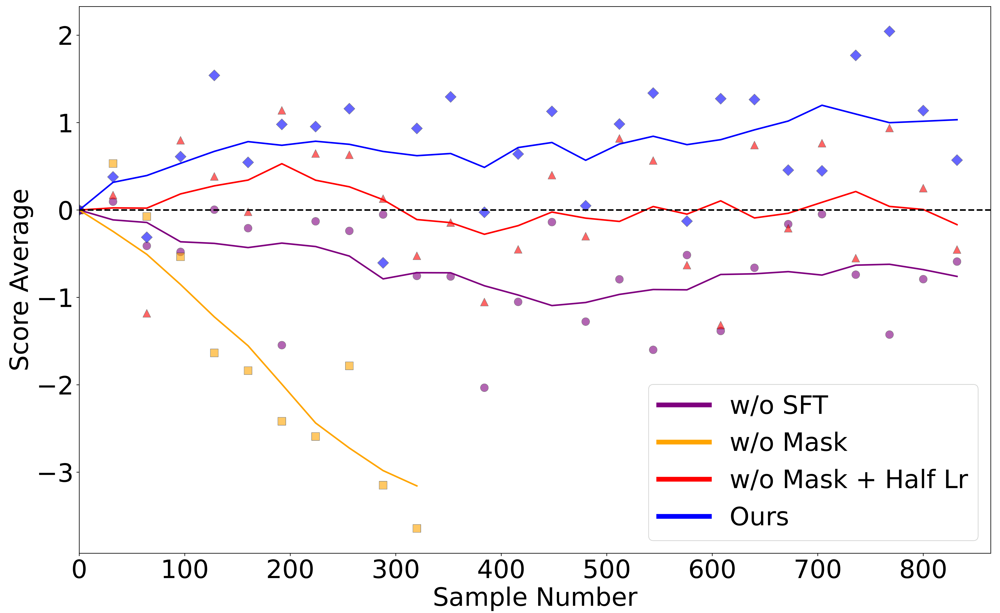
Fig 6: Ablation study of two-stage training.
We propose a two-stage training framework, comprising a supervised fine-tuning phase and a masked online fine-tuning phase, to incorporate scientific knowledge into existing generative models utilizing Science-T2I.
Necessity of SFT. Initial SFT (blue) provides a better starting point for OFT, leading to stable performance gains. Without it (purple), OFT struggles, highlighting SFT's role in establishing a good base for effective training.
We propose a two-stage training framework, comprising a supervised fine-tuning phase and a masked online fine-tuning phase, to incorporate scientific knowledge into existing generative models utilizing Science-T2I.
Masking Strategy As A Denoiser. Without masking (yellow), performance is erratic with collapse. Lowering the learning rate (red) prevents collapse but doesn't improve the model. Masking likely prevents the model from treating all features as equally important, reducing noise and enabling stable improvement.
Fig 7: Case study. The upper images are generated using the base FLUX.1[dev], whereas the lower images are produced with our fine-tuning method. Each image pair utilizes an identical random seed to ensure consistency in comparison. Note that the displayed prompts are summaries of the original prompts.
BibTeX
@article{li2025pisa,
title={PISA Experiments: Exploring Physics Post-Training for Video Diffusion Models by Watching Stuff Drop},
author={Li, Chenyu and Michel, Oscar and Pan, Xichen and Liu, Sainan and Roberts, Mike and Xie, Saining},
journal={arXiv preprint arXiv:2503.09595},
year={2025}
}